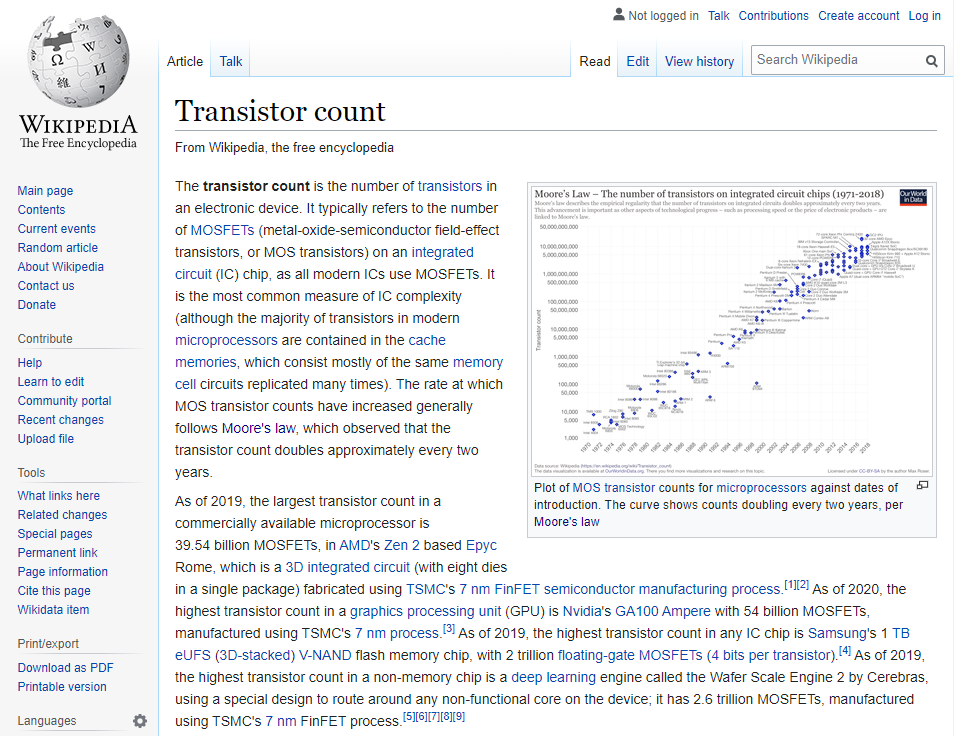
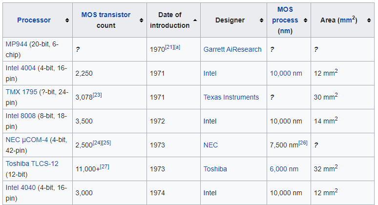
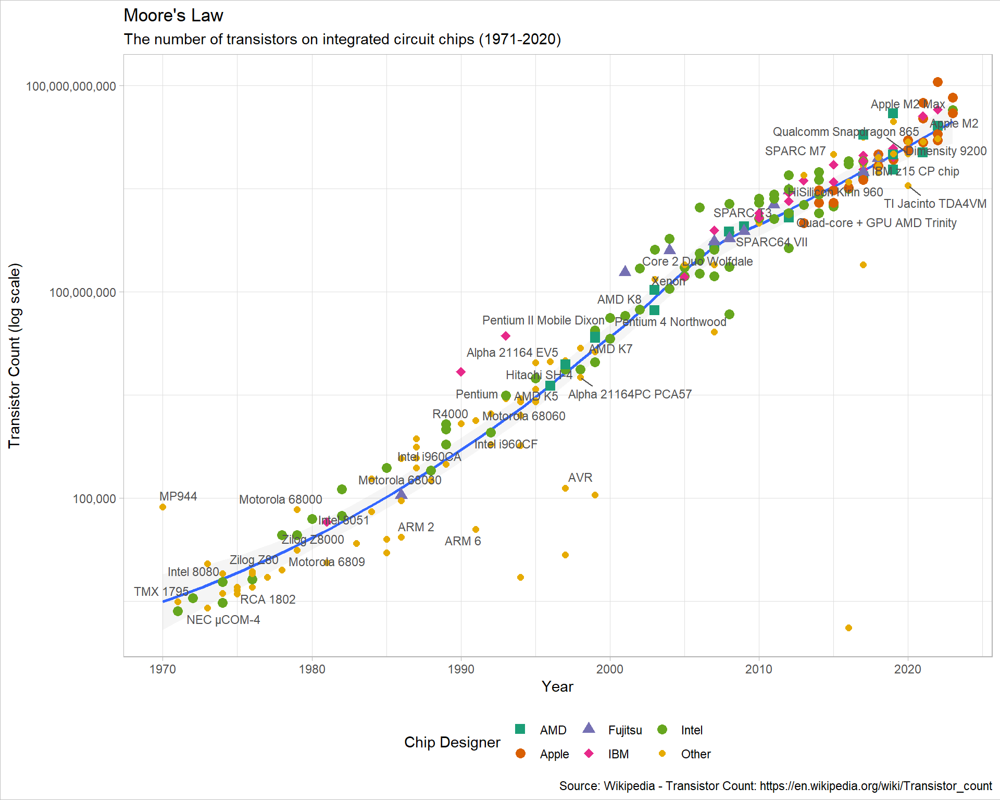

url <- "https://en.wikipedia.org/wiki/Transistor_count"
html <- read_html(url)
html_tables <- html %>%
html_table()
df_transistors <- html_tables[[4]]Recreating Our World In Data’s Beautiful Transistor Count Graphic
Scraping data from Wikipedia and recreating OWID’s figure with ggplot2.
Purpose
In this document I walk through the process to recreate a data visualization from Our World in Data. I use the web scraping package rvest to get the data from Wikipedia and some neat tidyverse tools.
The graphic depicts the metal–oxide–silicon (MOS) transistor count on commercially available microprocessors over time. This progression is known as Moore’s law, which observed that the transistor count doubles approximately every two years.

First, I show the wikipedia page that contains the information that I want to scrape (and contains the Our World in Data graphic).

The Wikipedia article on transistor counts includes a table containing 193 microprocessors released between 1971 and 2020, shown below. Crucially, it specifies for each chip the release year and transistor count.

Scraping
This chunk of code grabs the HTML of the Wikipedia page, selects all the tables on the page and saves the one we want to analyze as a tibble, a very handy dataframe alternative. Rvest’s html_table function returns all of the elements of a web table, neat!
Data processing
As visible in the screen capture of the table above, a few cells also hyper-link to sources for the stats. These square brackets prevent R from reading the column as a set of numbers, instead the cell contents are returned as characters. In the chunk below I use readr’s parse_number function to extract the numbers from each cell and store them as a double.
df_transistors <- df_transistors %>%
janitor::clean_names() %>%
mutate(processor = str_squish(str_remove(processor, "\\(.*"))) %>%
mutate_at(c("transistor_count", "date_ofintroduction", "process_nm", "area_mm2"), parse_number)Data viz preparation
In this chunk I lump together the chip designers into the five largest groups and an ‘other’ category with forcats’ fct_lump function. It returns these categories as factors. To make the graphic readable, I sample 50 of the processors from the table of 193 to annotate onto the plot I also store some graph labels.
df_transistors %>%
count(designer, sort = T)# A tibble: 44 × 2
designer n
<chr> <int>
1 Intel 64
2 Apple 22
3 AMD 21
4 IBM 19
5 Fujitsu 10
6 Huawei 7
7 Motorola 7
8 Qualcomm 7
9 DEC 5
10 Texas Instruments 5
# … with 34 more rowsdf_transistors <- df_transistors %>%
mutate(designer = fct_lump(designer, 5))
processor_labels <- sample(df_transistors$processor, 50)
title <- "Moore's Law"
subtitle <- "The number of transistors on integrated circuit chips (1971-2020)"
caption <- "Source: Wikipedia - Transistor Count: https://en.wikipedia.org/wiki/Transistor_count"Plotting
Here I draw the graphic using ggplot2.
# jpeg(
# filename="C:/Users/User/Documents/Recon/jjayes_distill/_posts/2021-04-21-chips/figures/Transistors_colour.jpeg",
# width=6,
# height=4,
# units="in",
# res=1000)
df_transistors %>%
ggplot(aes(date_ofintroduction, transistor_count)) +
geom_smooth(group = 1, alpha = .1) +
geom_point(aes(colour = designer, shape = designer), cex = 3) +
geom_text_repel(data = df_transistors %>%
filter(processor %in% processor_labels),
aes(date_ofintroduction, transistor_count, label = processor),
cex = 3, colour = "#505050") +
scale_color_brewer(palette = "Dark2") +
scale_shape_manual(values = seq(15,20, by = 1)) +
scale_y_log10(labels = scales::comma_format()) +
labs(x = "Year",
y = "Transistor Count (log scale)",
shape = "Chip Designer",
colour = "Chip Designer",
caption = caption,
title = title,
subtitle = subtitle)
# dev.off()I include a smoothed line of best fit (with geom_smooth) below the points to show how progression in transistor count has slowed since 2005, despite the number of chips designed each year increasing.
I use geom_text_repel to prevent the labels overlapping each other, and put the y-axis on a log scale to draw attention to the approximate doubling of transistor count each year.
Conclusion
Thanks for reading along! I hope you learned some neat tricks, and see how easy it is to grab data from the web to visualize.